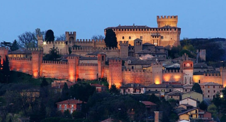
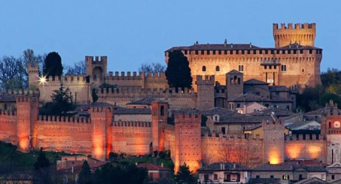

"Земля Марке"
 Авторский гастротур
в Италию
О нас


Нас зовут
Людмила и Жанна
Частичку моего сердца украла горячая,
страстная страна Италия, я посвятила себя
ей,
я ее
попробовала. Там я научилась любить
то, что я делаю. Кулинарный блогер,
обучалась у поваров
Мишлен, учу
готовить
по итальянским рецептам
Моя сестра Жанна, которая прожила
в Италии больше 20-ти лет и знает
о ней все, ну или почти все
Программа
День 1
Прилет (вторая половина дня). Встреча в аэропорту и трансфер с просекко на комфортабельной машине в фермерский загородный дом. Заселение. И сразу же начинаем наш гастро-оргазм! Едем ужинать в особое месте, где запах пьяды, радость вина, вкус мяса, сыра подарят первые эмоции нашего гастротура. У подножия горного пика, который венчает старый город и крепость Сан-Марино расположился поселок Вилла Веруккио, гастрономическим украшением которого является семейный ресторан Casa Zanni. Casa Zanni — место с историей в 100 лет. Знатоки аутентичной итальянской кухни и любители хорошо поесть оценят это место. А на десерт итальянская Gelateria — МОРОЖЕННОЕ! Как утверждают основатели этого места: «Своим вкусом мы заберем ваше сердце и делаем это уже 74 года!»
День 2
ЗАВТРАК (ранний) Рано утром мы отправимся в Aqualagnia, в лес, с красивым итальянским лесником искать грибы ТРЮФЕЛЯ — ЗОЛОТО региона Марке. Незабудьте взять обувь для леса. Далее мы отправимся на экскурсию по фабрике, где перерабатывают трюфеля. Компания с 30 летним опытом в области трюфелей! Потом посетим магазинчик, где можно будет продегустировать трюфеля и прикупить себе. Обед в ресторанчике tagliatelle con tartufo (тальятелли с трюфелем) и бокальчиком вина..мммм!!! Далее проедем заповедник Furla, заедем в дом Муссолини, зайдем, выпьем чашечку caffe. А потом опять кушать! Пицца и вино. Но перед пиццей мы отправимся в Castello di Gradara! Жемчужина Италии — Замок Градара. Градара прославилась благодаря преданию гласящему, что именно в этой крепости разыгралась трагедия, связанная с историей любви Паоло и Франчески, которой посвятил страстные строфы великий Данте в «Божественной комедии».
День 3
Завтрак. СЕЛЬСКОХОЗЯЙСТВЕННАЯ КОМПАНИЯ Azienda Agraria Guerrieri. Тут вы почувствуете вкус и силу семьи! Все, что тут делают, а это: оливковое масло, вина, муку, мед — делает одна большая красивая семья! Тут мы прогуляемся по виноградникам, оливковым рощам, будем любоваться холмами Марке, фотографироваться. Тут божественные виды! Далее дигустация лучших вин и масла, региона Марке. Смотрим производство вина и оливкового масла. А после шопинг! Но не одежда, аа.. вино, масло, паста, мука, мед.
День 4
Завтрак. Марке — это родина olive all'ascolana, porchetta и не только. Колбасные изделия домашнего приготовления, приготовленные из отборной свинины и искусно приправленные опытными руками итальянских мастеров. Приглашаем вас попробовать колбасные изделия от ветчины до салями, от сосисок до панчетты. Обед в местном, пропитанным любовью, семейном ресторанчике. Тут мы попробуем поркетту — одно из традиционных блюд Италии, которое готовится из запеченной свинины, а именно из сала с мясной прослойкой. И чтобы все это улеглось в животике, а не в бедрах, едем гулять. Mondavio — маленький городок с его замком и крепостью Roca Roveresca. Мы погуляем там и впитаем в себя всю атмосферу простой итальянской жизни. И на закуску la castagnola! А вечером конечно же Pesce! Рыбный ресторан, вино и прощальный ужин. В этом дне главное — не лопнуть от еды!
День 5
Собираем чемоданы и отправляемся в аэропорт. Наше путешествие, к сожалению, подошло к концу, но надеюсь от души, что воспоминания о нем еще долго будут греть ваши сердца.
Фото


Цена
14 ноября — 18 ноября
2550€
В цену входит
Проживание
Питание
и дегустации
Трансфер
В цену НЕ входит

Перелет туда и обратно
Виза
Медицинская страховка